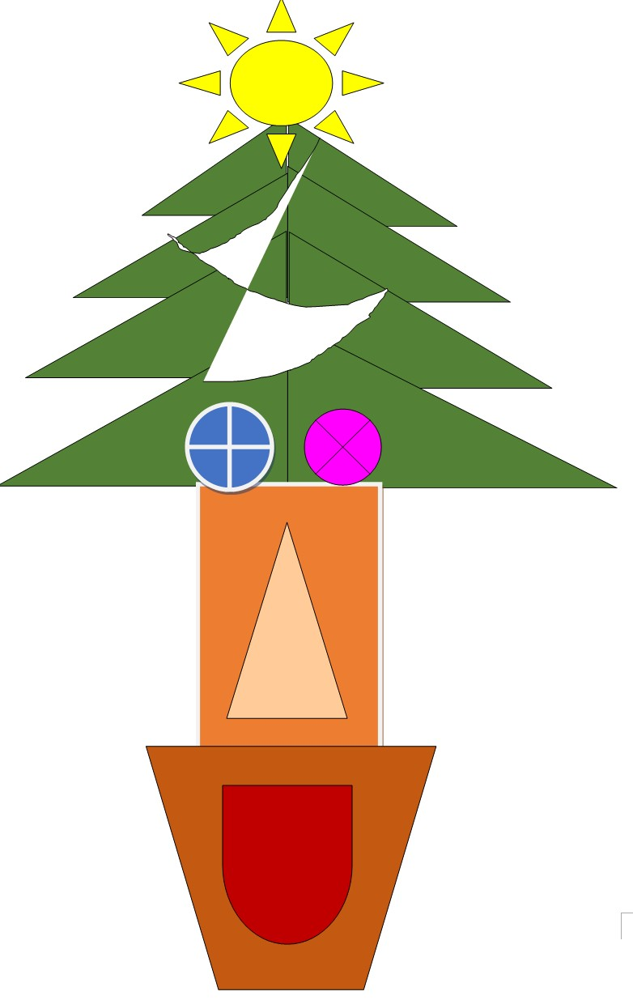

オリジナルキャラクタ
このキャラクターの名前は、妖怪クリストマッスルです。青とピンクの目は男の子、女の子を表しています。
この妖怪クリストマッスルはクリスマスの一週間前に日本に来ます。この妖怪は２０代の恋愛真っ盛りの２０代の男女しか見ることができません
この妖怪クリストマッスルの目を見た男女は恋に落ちます。そして、幸せなクリスマスを過ごすことになります。
しかし、クリスマスが終わると妖怪クリストマッスルは筋肉の力で２人の男女を強制的に破局させます。そして、その二人は一生会うことができなくなります
その都市伝説からこの生物は妖怪クリストマッスルと呼ばれるようになりました。 この話が本当かどうかは誰もわかりません。
